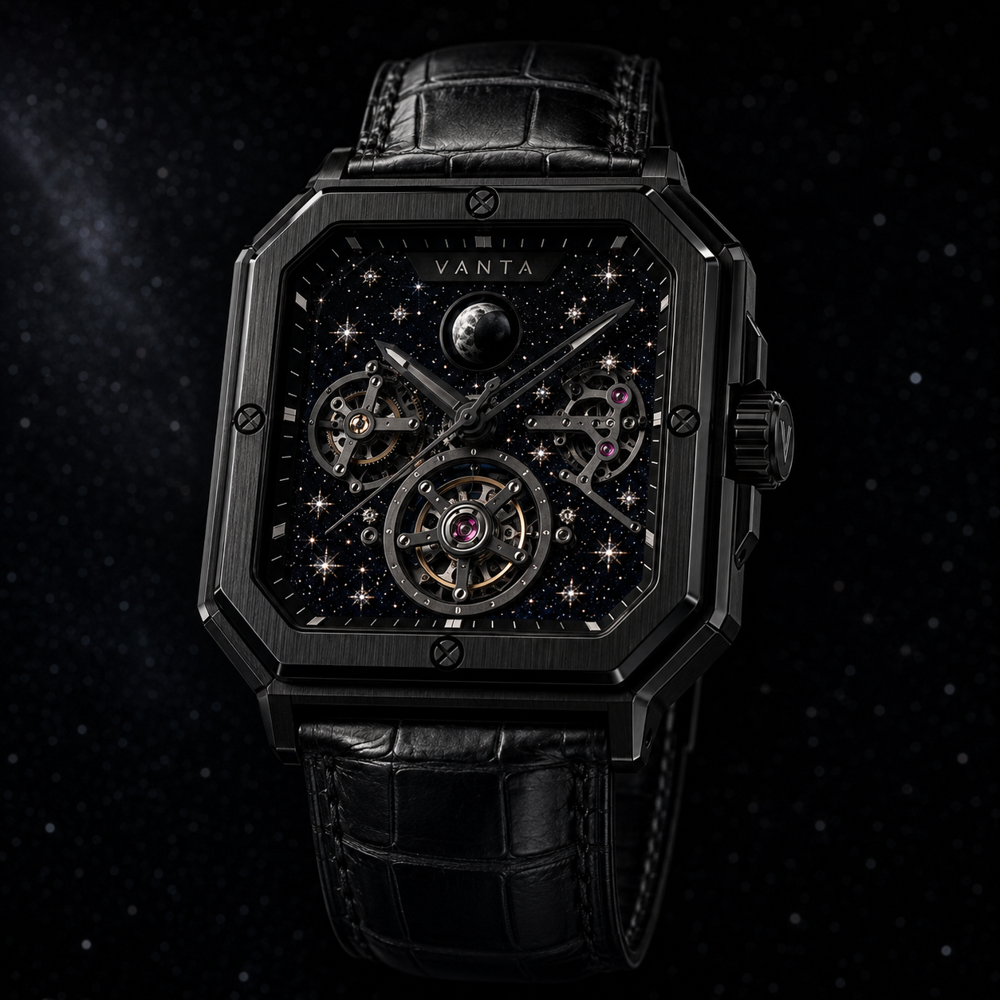
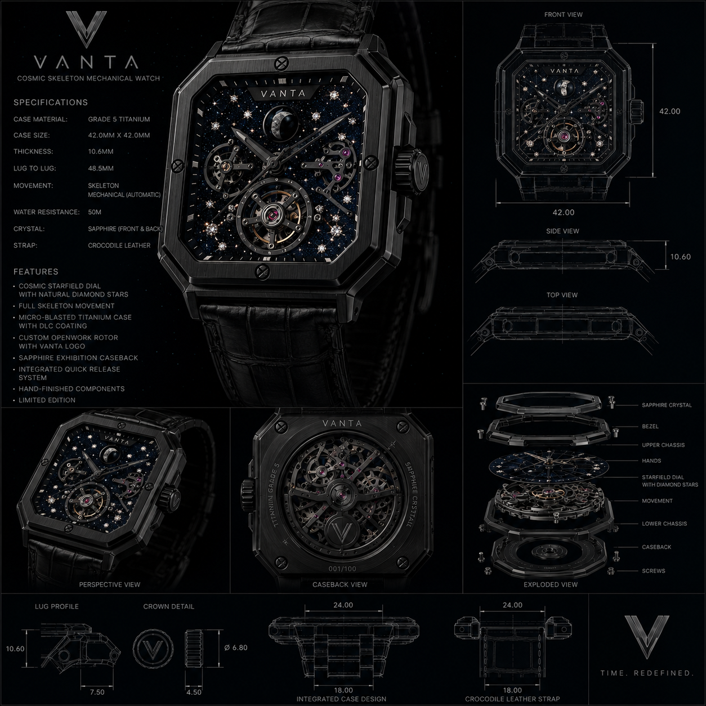

Cosmic skeleton mechanical watch
VANTA
Time. Redefined in titanium and starlight.

Crafted from darkness
A black titanium case cut like architecture.
Micro-blasted Grade 5 titanium, a deep DLC finish, and a square silhouette built for shadow, edge, and reflection.
Diamond starfield dial
A night sky suspended over mechanics.
Diamond stars catch the light above an open calibre, turning the dial into a moving constellation.
Skeletonized precision
The movement is not hidden. It performs.
Visible bridges, jewel accents, and openwork geometry create a mechanical display with depth and rhythm.
Titanium architecture
Layered from crystal to caseback.
Sapphire, bezel, dial, movement, chassis, and caseback separate into a precise stack of engineered shadows.
Limited to 100
A first edition with a numbered caseback.
Each piece is reserved by allocation and finished as a collector-grade prototype.
Prototype reference
The original board remains the blueprint.

Private allocation
Request access.
For collector previews, investor conversations, and early reservations.